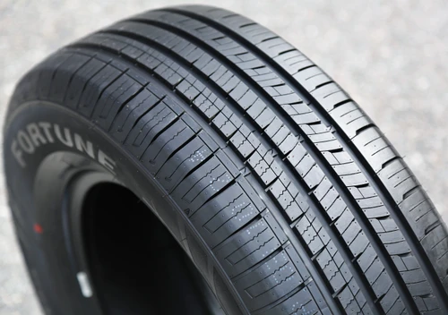

Fortune Perfectus FSR602 165/55R14

RM 128.00
The Fortune Perfectus FSR602 is a high-performance passenger car tyre designed for driving comfort, responsive handling and reliable wet road grip. Its asymmetric tread pattern improves cornering stability, while four wide circumferential grooves enhance water evacuation. PNS (Pattern Noise Simulation) technology helps reduce road noise, and its continuous rib design promotes even wear and longer tread life. Suitable for daily commuting and highway driving.
Klang Hock Li Tyre Services Sdn Bhd, Klang, Selangor, Malaysia.
View live product details and enquire